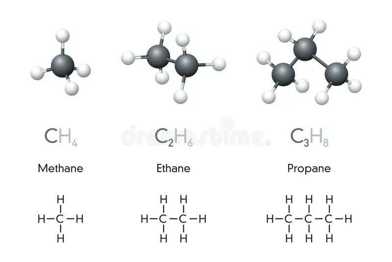

Los carbohidratos caracterizados por ser una cadena de carbonos y de hidrogenos. El nombre de estos elementos se los nombra dependiendo de su cantidad de atomos de carbono, que tipo de enlaces tienen entre estos carbonos entre otros. A continuacion mostraremos una tabla que describe como se nombran estos compuestos.
| Nº de Carbono | Subfijo | Terminacion |
|---|---|---|
| 1 | met | metano |
| 2 | et | etano,eteno,etino |
| 3 | pro | propano,propeno,propino |
| 4 | but | butano,buteno,butino |
| 5 | pent | pentano,penteno,pentino |

Isometria se difine como una molecula que contiene los mismos elementos en identidad y cantidad pero con diferente estructura, es decir, con diferente ubicacion de los atomos de carbono e hidrogeno o distintas posiciones de enlaces.
Se llama isometria a la variacion en la ubicacion de los atomos del Carbono en los hidrocarburos ya mencionados a esta anomalia en la posicion se la llama radical o sustituyente.
Los radicales se distinguen tambien por por la cantidad de carbonos que tiene esta. Y terminan en "IL/ILO"
ademas, en caso de ser mas de uno se le agrega un "di" para 2 radicales "tri" para 3 y tetra" para 4 radicales y sigue.
Ejemplo: Una cadena de 8 carbonos con solo enlaces simples con 3 radicales de un carbono posicionados en los carbonos 2,3 y 4
2,3,4 trimetil- octano
Se enumeran de donde vienen los radicales
Se menciona cuantos con el prefiejo(tri en este caso)
Se termina con el tipo de radical(metil por ser un solo carbono)
Se cierra con la cadena mas larga de carbonos(8 carbonos)+tipo de enlace("ano" por enlaces simples)
| Posicion | Nº de C en el radical | Prefijo | Subfijo | Cadena mas larga | Resultado |
|---|---|---|---|---|---|
| 2 | 1 | met | il | 5 | 2 metil-pentano |
| 3 | 2 | et | il | 8 | 3 etil-octano |
Asi como ya se vio, se nombran los hidrocarburos con radicales, pero esto no queda ahi, si tiene
varios radicales y difieren de tipo la nomenclatura se mantiene, pero se agrega una nueva estructura
para identificar el radical.
Los hidrocarburos que presentan enlaces no simples tienen una pequeña modificacion de nomencladura, para
empezar, el carbono primero se define por el mas cercano al enlace doble o triple.
Una vez enumerados los carbonos se define el prefijo que señala en enlace donde se encuentra, en
caso de que el enlace sea en el primer carbono solo se agrega una "n" sino el numero en el que va el
enlace, de ser mas, se usa el "di/tri/tetra..." para indicar la cantidad y agregando antes los numeros de donde se encuentran
| Cadena de C mas larga | Tipo de Enlace | Posicion del Enlace | Prefijo | Resultado |
|---|---|---|---|---|
| 7 | doble | 1 y 3 | di | 1,3-dihepteno |
| 8 | triple | 1,3 y 5 | di | 1,3,5-trioctino |
Dentro de la quimica organica existen muchos tipos de moleculas, los principales son los carbohidratos, una cadena de carbono e hidrogeno, la valencia del carbono siempre es de -4 y la del hidrogeno es de 1, por lo que cada carbono busca compartir 4 electrones ya sea en enlaces simples, dobles o triples, de este modo los carbonos forman enlaces entre ellos y los hidrogenos para que cada uno termine compartiendo esos ultimos electrones.